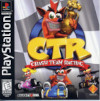

Jogos que fizeram parte da infância
A melhor forma de eu organalizar e lista esses jogos que tanto me marcaram é divindo por console
Começando com o Super Nitendo
- Super Mario

- Que havia um modo que dava pra jogar em duas pessoas, lembro muito de jogar isso na casa do Pedro
- Street Fighter
- Outro jogo que marcou bastante! Cheguei jogar com Pedro e a Thaty, mas joguei com alguns amigos da rua
Playstation 1
- Metal Slug

- É tão nostalgico lembrar desse classico jogo 2D!
- Crash Team Racing 
- Fechei algumas vezes, lembro que todas foram bem dificil!
Playtation 2
- Marvel: Ultimate Alliance 2

- Um otimo jogo para jogar com até 3 amigos! Bons momentos de diversão com esse game.